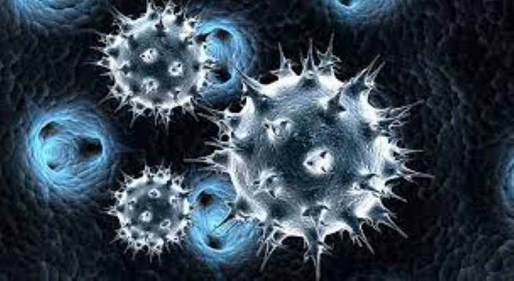

Differences Between Communicable and Infectious Diseases
By swati baretha MPH Updated on September 05, 2023 Medically reviewed by Jordana Haber Hazan, MD
While the words "infectious" and "contagious" are often used interchangeably to describe illnesses, they actually mean two very different things.

Infectious Disease
Put simply, an infectious disease is an infection. That is, when a microorganism comes into your body, and makes itself comfortable. For bacteria or fungi, this means dividing and growing new cells at an exponential rate. Viruses, on the other hand, have an added hurdle of entering human cells and taking over their control centers so that they can make more of themselves.
Infectious & Not Communicable
While all communicable diseases are infectious, not all infections are communicable. Tetanus, for example, can cause an infection, but a person with tetanus can't spread it to other people.1 The bacteria live in dirt and dust and get inside your body through abrasions like cuts, scrapes, or punctures. While the pathogen can lead to a very serious infection and illness in individuals, it will almost certainly never cause a worldwide pandemic.
Invisible Infections
Communicable Disease
A communicable disease is a contagious one. The effect is external. If someone catches the illness, they can get sick and spread the pathogen—be it a cold, virus, or some other disease-causing agent—onto the next person. This can lead to small, isolated outbreaks or full-scale pandemics. An example of this happens each and every year in the United States from roughly October to May: the flu. As influenza viruses are passed from person to person and via contaminated objects, the virus spreads far and wide. For every one person with the flu, another one to two others will likely become infected if they aren't immune. The rate of how fast a pathogen can spread is called the basic reproductive number, or R0 (pronounce R-naught), and it depends on a wide variety of factors, including how the microbe travels to new people.
Methods of Transmission
Nature has no shortage of creativity in how pathogens can travel through a population. These are just a few of the most common methods microbes use to spread.
Person-to-Person
Pathogens that go from one person to another can be transmitted a number of ways, such as through respiratory droplets like coughing or sneezing, sexual activity, contact with blood, or from mother to child during pregnancy, birth, or breastfeeding. Active illness where you're sneezing or coughing a lot can give the microbe more opportunities to spread, but you don't have to have symptoms to be contagious. You don't even have to be around. Measles, for example, can be transmitted up to four days before you even develop the telltale rash, and the virus can stay in the air for as long as two hours after you have left the room.2
Vectors
Some microbes aren't spread from person-to-person, but rather along a more circuitous person-vector-person path. Responsible for millions of illnesses each year, mosquitoes are one of the world's most common vectors. Malaria, for example, is spread by mosquitoes who become infected after biting someone with the disease, and then they, in turn, pass the parasite onto the next person they bite.3 World Health Organization. Malaria. The presence of mosquitoes alone isn't enough to spread diseases. They are merely the pass-through. If there aren't any people around with malaria, the mosquitos can't spread the disease.
Fomites
Some diseases don't even need a living thing to infect new people—just a surface to hang onto. One of the reasons hand-washing is so important to prevent disease is because there is a ton of objects we touch every day that are rife with germs that can make you sick. During cold and flu season, absentmindedly wiping a runny nose and then touching a doorknob is a common way for the viruses to hop a ride to the next person. When you come behind them to open the same door, the viruses get onto your skin and wait for an opportunity to get inside your body—often when you are touching your nose or rubbing your eyes.
Fecal-Oral and Foodborne
A particularly gross way germs travel is referred to as fecal-oral—that is, through something contaminated by fecal matter. For instance, a doorknob is contaminated by a person who didn't wash their hands after going to the bathroom. This can infect someone else who might touch the same doorknob and then put that hand in his/her mouth. Another method of contamination is food poisoning, caused by ingestion of toxins usually from spoiled food. The spoiled food may contain toxins, parasites, and bacteria. Most often, the bacteria that spoil food and can cause illness in humans include e. coli, staphylococcus aureus, salmonella, botulinum, campylobacter, cholera, and listeria.
Sanjeevani aims to provide overall health
welfare and awareness and to cover
the gap between the peoples and the
medications
+91 8827343481
sb360879@gmail.com

NewsLetter
Subscribe to our weekly Newsletter and receive updates via email.
All Rights Reserved @ Sanjivani 2023
Terms and conditions